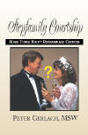

Some people feel that marriage is marriage, whether it's the first time
or the third. Well - yes and no.
Most partners commit hoping to steadily
fill an interactive set of personal and social
Divorces occur because one or both partners lose hope that their
needs will be filled well enough. Do you agree? This
implies that millions of
spouses can't...
-
identify
and assert
their
effectively,
-
describe and manage these widespread
marital
-
make three wise
and they can't...
-
significant relationship conflicts (fill their needs) effectively.
This
suggests that previously-married partners who commit to a new mate must
acknowledge and master these four stressors or risk another
breakup. It also implies that their new mate needs to be fully aware of these
stressors before committing.
What percentage of average re/marrying women and men do you suppose (a)
understand these four factors and their implications, and (b) are
motivated and able to master them? Think of any
re/married couples you know. Could they clearly explain these factors and
how they're dealing with them?
 What's
Different About Re/marriage?
What's
Different About Re/marriage?
A web of significant things:
-
partners are usually older than first-marriers (e.g.
30s or older), which means they may...
-
be wiser and more
-
have progressed on reducing any
psychological
-
have significantly
different life
than in their 20s, and they may...
-
have developed a wider support network
than younger mates; and..
-
any
will have progressed
toward resolution: premature death, or
and recovering;
-
unlike first marriers, one
or both mates may be widowed or divorced, and a parent;
-
American re/married
partners are more apt to differ significantly in age, religion, and
ethnic background than typical first-marriers; (I don't know about other
countries);
-
they're usually wealthier
and more advanced in their careers;
-
they may have one or more minor or adult kids,
and possibly grandkids;
-
their parents may be retired, elderly, infirm,
or dead;
-
re/marrying partners' social status may be different - especially if
they're forming a stepfamily and/or committing for the third or fourth
time;
-
most
partners know from experience that "love
may NOT be enough (for a happy marriage)," so they may
(vs. will)
have more realistic expectations;
-
they and any kids and
bonded relatives have major death or divorce-related
(broken bonds) to
mourn,
and may or
have progressed on or completed their grieving;
-
re/marrying parents have
more child-raising experience than typical first-marriers;
-
divorcing adults now know what the
psychological and legal divorce process feels like - so
they
may or may not be wiser about choosing it again.
-
typical stepfamily environments
are way more complex,
alien, and stressful than childless re/marriages, which makes
courtship commitment choices
significantly more complicated and
and...
-
typical American re/marriages fail more often than average first
unions for the same
as
first divorces. The
risk of failure may be higher for typical re/marrying divorcees than for
widow/ers.
Can you think of other
significant differences between first marriage and re/marriage? As you see
all these together, what are you thinking and feeling?
Bottom line - re/marriage is the same as first marriage in...
-
the
that each mate seeks to fill;
-
the legal contract, rights, and
obligations of marriage; and...
-
the social and religious rites to sanctify
it.
At the same time, typical
re/marriages differ from
childless first unions
in at least 13 ways -
personally, relationally, and socially. Did
you realize this? Do your mate and other key people?
Types of Couples
Re/married couples may differ from each other like this:
-
both divorced one or more times
-
one divorced or widowed, and
the
other never married before
-
both widowed, recently or not
-
independent,
interdependent, or
|
-
one or both mates are significantly
(psychologically)
-
with or without (a) existing kids
and (b)
friendly or hostile ex-mates
-
formally married or just cohabiting
-
heterosexual or
same-gender
|
Each
type of couple...
-
seeks to fill the same primary
-
has significant
losses (broken bonds) to mourn,
-
needs to
and
effectively to fill their needs,
-
has living and dead genetic and
legal relatives with whom they are significantly bonded or not; and they
each...
-
face these five
 Re/divorce Odds
Re/divorce Odds
My experience suggests that the couples least likely to re/divorce are
minimally wounded, both widowed, childless, well-grieved, well educated,
financially comfortable, and formally remarried.
The couples at most risk of re/divorce are...
significantly
and unaware of the topics in
with no
higher education, and they have significant financial, legal, parenting, ex
mate, and/or health
stresses;
one
or both mates has had, or now has, one or more addictions - including
food, activity, mood, and codependence; and...
both
have
major life losses, including those in childhood; and...
one
partner has never married or parented, and the other is a divorced
parent with one or more teens whose other bioparent is
active and
and...
one
or both mates and key relatives deny or minimize their stepfamily
and what it
have
courted only for a few months;
and they are...
cohabiting rather than formally marrying.
In my professional experience, the more of
these traits a couple has, the higher the odds they will re/divorce
psychologically or legally. Legal separation and divorce often do
not end the relationship.
Re/marital Stressors
Premise - most primary-partnership problems (unmet needs)
are symptoms of five core hazards. Such symptoms are the same as in first marriages,
except when prior kids and ex mates are involved (more concurrent
stressors). Though there are
infinite variations of these surface problems, most of them involve
identifying and solving these three
interactive stressors and these relationship
Re/marital Protections
Childless couples should work together at
these options starting in courtship,
with emphasis on healing psychological wounds and improving communication, grieving, and relationship knowledge and skills (Lessons 1
thru 4). Pay special attention to grieving the complex
from divorce and/or mate-death!
Couples with one or more kids from prior unions need special
protections because of the complexity of typical stepfamily
relationships and merger tasks.
 This nonprofit Web site offers scores of experience-based, practical
articles and resources to help you do
these Lessons together. Most of these are integrated in my unique guidebook
Stepfamily Courtship (Xlibris.com, 2002).
Many courtship tasks continue
after re/committing.
1) After exchanging vows,
continue applying
as patient marital and co-parenting teammates.
Give steady
to nurturing your marriage amidst complex stepfamily
stressors.
2) As you merge, use this
level-concept about stepfamily problems to identify what your members
need. Then use these ideas about analyzing and
resolving your problems as
team-mates, not opponents.
3) Refer often to these
and use this
menu of solutions to specific stepfamily problems - as teammates;
And...
4) Find and use stepfamily-informed
lay and
with the roughest spots along the way. Do this as
a demonstration of strength and commitment, not "weakness"!
Pause and notice where your thoughts and feelings take you now. If you
feel
overwhelmed, stay aware - you don't have to do these things all at once, and you have
(hopefully) a willing partner to join you in progressing on them a day
at a time. The key to succeeding
at these challenging personal and relationship tasks is to
your
to
your personality most of the time.
Bottom line - "the second or third time around is both the same
as a first partnership and different in a number of ways. Five
menace every committing couple. The odds for
success seem to be smaller for most who try re/marriage, unless they commit to
applying some version of these vital
.
Recap
This Lesson-4 and
Lesson-7 article offers perspective on marriage and
remarriage; and proposes common needs that average
partners seek to fill by committing to each other, and five root
causes of most legal and psychological divorces.
Based on these, the
article proposes practical options for all
committed couples, and additional ones for typical stepfamily couples to
achieve and maintain a mutually-satisfying primary relationship and a
family together.
Pause, breathe, and reflect - why did you read this article? Did you get
what you needed? If not, what
you need? Who's
these questions - your
or